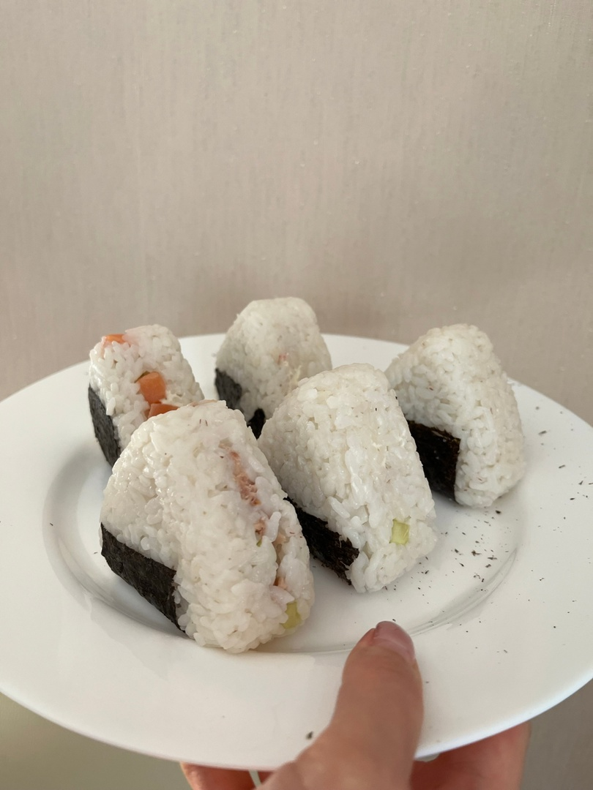

ОНИГИРИ
Онигири — традиционное японское блюдо с древней историей. Рисовые колобки появились в эпоху Хэйан среди солдат в качестве походной еды, которую можно есть на ходу.
Рис для колобков традиционно делают пресным, без соли и специй. Если такой вариант вас не устраивает, можете использовать соль по вкусу, либо при употреблении заменить соль соевым соусом. Для начинки можно использовать малосольную форель, лосося, маринованную сливу и морскую капусту.
КБЖУ на 1 порцию - 150/3/1/31Время приготовления - 40 часов
Сложность - средне
ИНГРИДИЕНТЫ НА 1 ПОРЦИЮ:
- Рис - 250гр
- Творожный сыр - 50гр
- Слабосолёная форель - 50гр
- Огурец - 1 шт
- Нори - 150гр
СПОСОБ ПРИГОТОВЛЕНИЯ:
Шаг 1:
Промойте рис, пока вода не станет прозрачной. Слив воду, оставьте влажный рис на 30 минут, чтобы он вобрал в себя остатки жидкости. Выложите рис в кастрюлю и залейте его 2 стаканами воды, доведите до кипения на сильном огне без крышки. Как только рис закипит, накройте кастрюлю крышкой и поставьте на медленный огонь. Варите в течение 15–20 минут. Все это время рис не перемешивайте, вообще не открывайте крышку. Уберите кастрюлю с огня, накройте полотенцем и дайте постоять еще 15 минут.
Шаг 2:
Выложите рис в миску и режущими движениями аккуратно перемешайте его деревянной лопаткой. Дайте рису немного остыть, тем временем подготовьте начинку и нори. Ингридиенты для начинки (у меня это с/с рыба, творожный сыр и огурец) лучше нарезать мелко, чтобы она хорошо уложилась в рисею
Шаг 3:
Руки смочите в подсоленной воде, чтобы к ним не прилипал рис. Положите рис в ладонь, слегка сжимая, спрессуйте его и придайте желаемую форму. Двумя пальцами сделайте углубление посередине, в которое положите начинку. Возьмите еще немного риса и «заклейте» углубление. Придайте онигири форму треугольника, переверните колобок несколько раз, после чего оберните его нори (шершавой стороной внутрь).
Шаг 4:
Готовые онигири можно украсить забавными рожицами из нори. Также можно использовать пищевые красители, чтобы придать рису различные цвета. Так ваше блюдо будет интереснее и веселее смотреться на столе! В качестве начинки можно использовать крабовые палочки, консервированный тунец с помидорами, жареную курицу и т.д.
ПРИЯТНОГО АППЕТИТА!